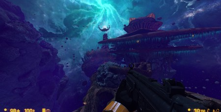

In this location, just before meeting team at Lambda Complex game is crashing when approaching this half open doors. It crashed game multiple times and I got through once when I was trying it going very VERY slow 


I’m experiencing crashes in XEN as well, but this time it occurs on this bridge when game reloads (after I fall off the bridge. Strangely after i killed myself using weapons It did not crash and falling off bridge after that did not crash the game)

Here are all my dump files:
Crashes from 11.04 are from issue in Lambda Complex and crashes from 12.04 are from XEN.
I have experienced strange visual artifacts on this bridge in XEN:

Here it caused bridge to be black but before crash it was strangely greenish in the same spots.
If you need more data I have game saves at these spots so i cane revisit them or provide save files.